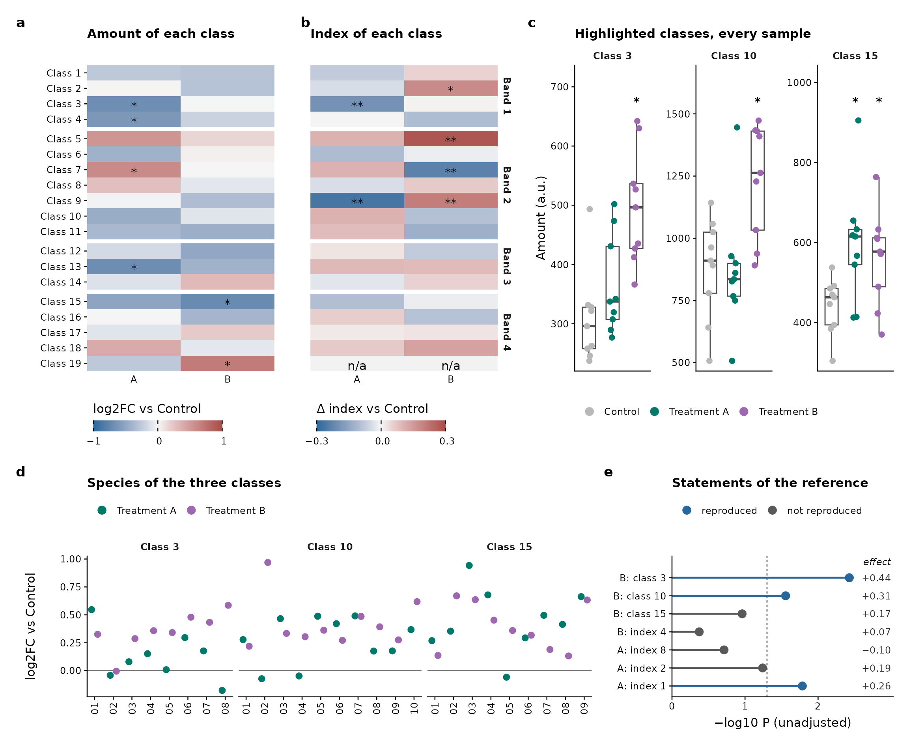
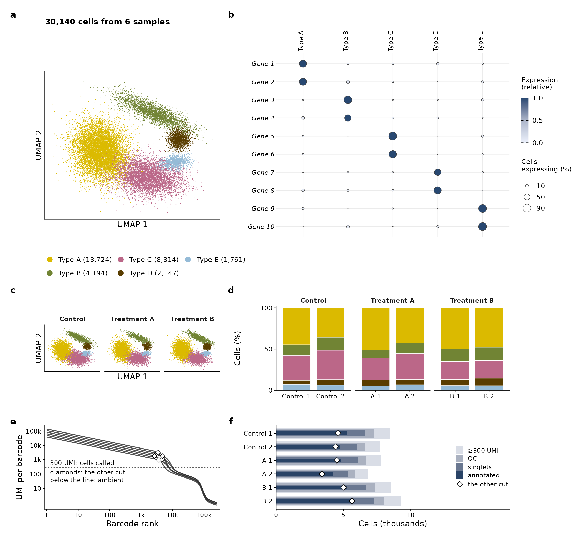
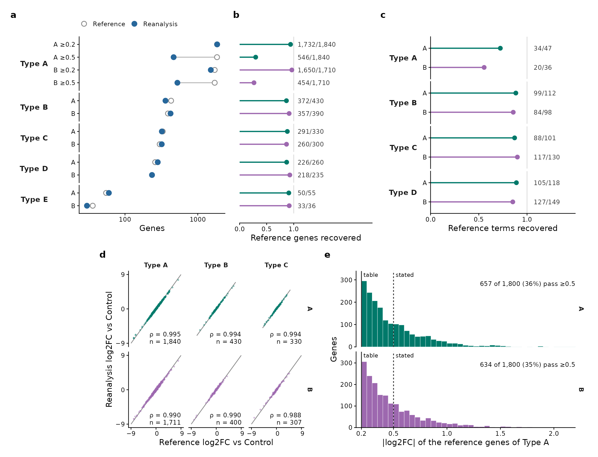
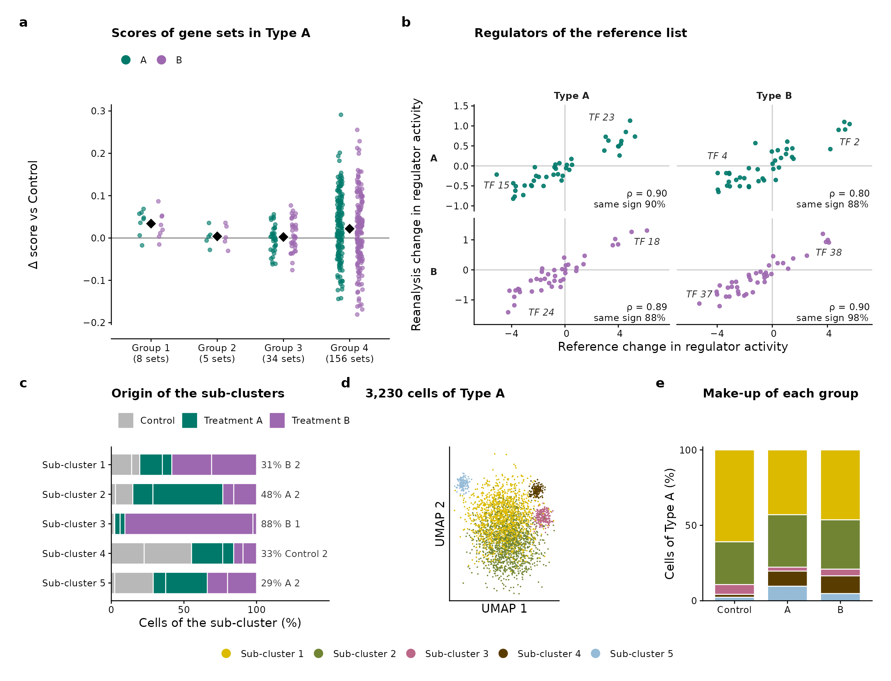
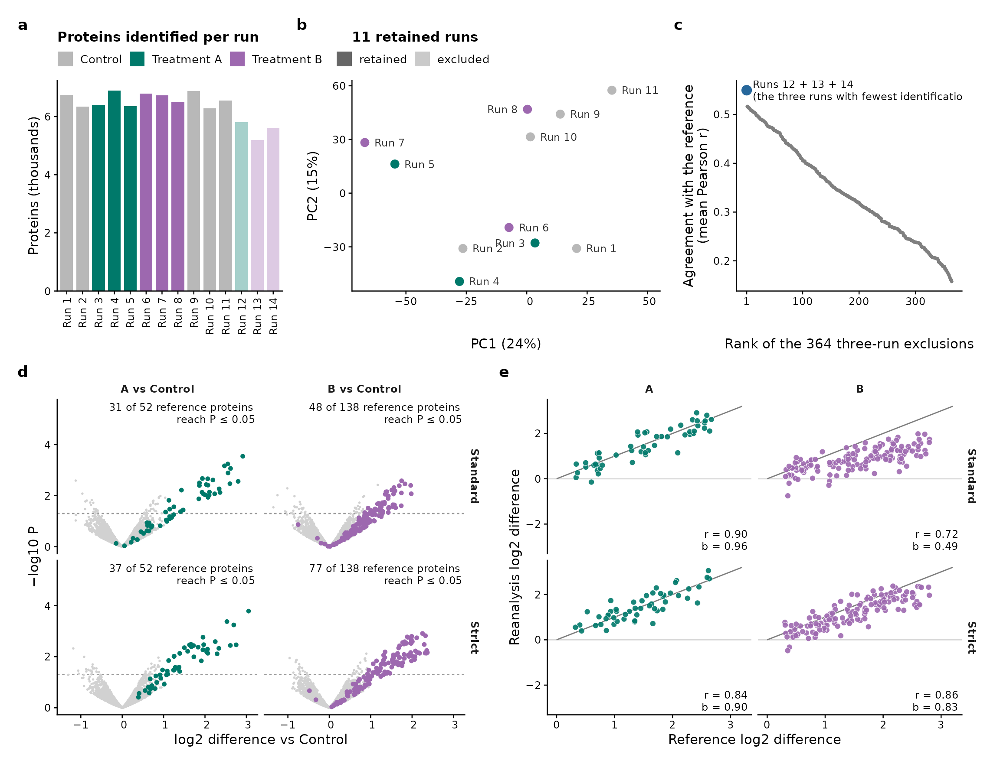
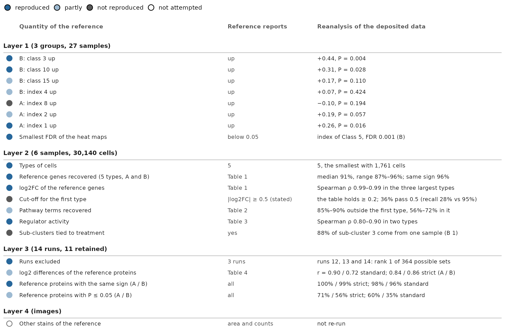
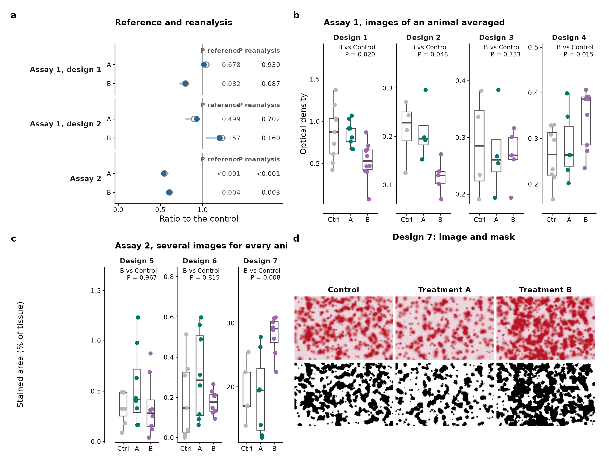

library(ggplot2)
library(themeset)
# patchwork lays out the panels of every figure; without it the code is shown but not run
has_patchwork <- requireNamespace("patchwork", quietly = TRUE)Overview
A reanalysis of a published study is a hard test for a set of figures. There are many kinds of evidence, each with a figure of its own: tables of effects, an atlas of cells, a comparison of the reference with the reanalysis gene by gene, quality control, a scorecard, images. Yet the figures have to read as one set: the same group has the same color in all of them, a blue means the same thing everywhere, and the text has one size.
This article draws seven such figures from simulated data. Nothing in
them is a result: the groups are called Control, Treatment A and
Treatment B, the genes are Gene 1 to Gene 10, and every number is made
up. What they share is a color contract, written down
once in the first section, and the style of a journal,
journal_theme("nature"): 183 mm wide, 7 pt text, 5.6 pt
tick labels, panels tagged a, b, c. At the end
journal_audit() checks the whole set: each figure against
the limits of the journal, and the figures against each other. A second
set, for a study of reports of drugs and events, is in A Figure Set for a Reporting Study.
1. The Color Contract
Every figure of the set takes its colors from this section.
- Group: Control is a light grey, Treatment A a deep teal and Treatment B an orchid, two colors that readers with color-vision deficiency can tell apart.
- Verdict: a result of the reanalysis is reproduced, in a steel blue, or not reproduced, in dark grey.
- Direction: down is a steel blue and up is a brick red, on a ramp that passes through white at zero. No group is blue or red, so a heat map is never read as a group.
- Categories that belong to no group, the types of cells and their sub-clusters, take five colors of other hues: a gold, an olive, a rose, a brown and a light steel.
- Ordered quantities, the steps of the cells that are kept and the relative expression of a gene, are steps of one cool slate.
library(patchwork)
# the colors are made with hcl() of base R, from a hue, a chroma and a lightness
groups <- c("Control", "Treatment A", "Treatment B")
group_colors <- c(Control = grey(0.72), `Treatment A` = hcl(176, 46, 44), `Treatment B` = hcl(296, 54, 52))
# a ramp from white to a deep end: the chroma grows and the lightness falls together
from_white <- function(hue, chroma, lightness, n = 6) {
s <- seq(0, 1, length.out = n)^0.9
hcl(hue, chroma * s, 97 - (97 - lightness) * s)
}
direction <- c(rev(from_white(245, 54, 42)), from_white(14, 68, 44)[-1]) # down is blue, white at zero, up is red
verdict_colors <- c(reproduced = hcl(245, 54, 42), `not reproduced` = grey(0.35))
free_colors <- hcl(c(70, 100, 348, 54, 234), c(88, 48, 53, 37, 34), c(76, 52, 54, 28, 74)) # gold, olive, rose, brown, light steel
slate <- function(chroma, lightness) hcl(250, chroma, lightness) # the cool neutral of ordered quantities
# one theme for every panel, and the sizes that the panels share
figure_theme <- journal_theme("nature") +
theme(plot.background = element_rect(fill = "white", colour = NA)) # no outline: it is a stroked path that crosses text where panels meet
small_text <- 5.5 / .pt # annotations are 5.5 pt (geom_text sizes are in mm)
strip_text <- theme(strip.background = element_blank(), strip.text = element_text(face = "bold"))
tag_theme <- theme(plot.tag = element_text(size = 8, face = "bold"))
# the panels of a figure sit on a grid of columns: each row lists its panels and their widths
design_rows <- function(rows) {
paste(vapply(rows, function(row) {
paste0(vapply(names(row), function(id) strrep(id, row[[id]]), ""), collapse = "")
}, ""), collapse = "\n")
}
tag_panels <- function(figure, n) {
figure + plot_annotation(tag_levels = list(journal_tags("nature", n)), theme = tag_theme)
}
minus <- function(x) sub("-", "\u2212", x, fixed = TRUE) # a real minus sign
p_text <- function(p) ifelse(p < 0.001, "<0.001", sprintf("%.3f", p))2. Figure 1: Heat Maps, Samples and Statements
Two heat maps on the same rows, the change of the amount of 19 classes and the change of an index of each, show what moved. A star marks P < 0.05 and two stars a false discovery rate below 0.05. The samples behind three of the classes come next, then the species of those classes, and last the statements of the reference, each with the P value of the reanalysis.
set.seed(11)
bands <- c("Band 1", "Band 2", "Band 3", "Band 4")
classes <- sprintf("Class %d", 1:19)
class_band <- rep(bands, times = c(4, 7, 3, 5))
comparisons <- c("Treatment A", "Treatment B")
effects <- function(sd_effect, se) {
d <- expand.grid(class = classes, comparison = comparisons, stringsAsFactors = FALSE)
d$effect <- rnorm(nrow(d), 0, sd_effect)
d$p <- 2 * pnorm(-abs(d$effect) / se)
d$fdr <- ave(d$p, d$comparison, FUN = function(p) p.adjust(p, "BH"))
d$mark <- ifelse(d$fdr < 0.05, "**", ifelse(d$p < 0.05, "*", ""))
d$band <- factor(class_band[match(d$class, classes)], bands)
d$class <- factor(d$class, classes)
d$comparison <- factor(d$comparison, comparisons)
d
}
amount_change <- effects(0.45, 0.28)
index_change <- effects(0.12, 0.07)
index_change$effect[index_change$class == "Class 19"] <- NA # a class that cannot be tested
index_change$mark[index_change$class == "Class 19"] <- "n/a"
# a, b: two heat maps on the same rows; the second names the bands, the first the classes
heat_map <- function(d, limit, title, fill_title, classes_named) {
p <- ggplot(d, aes(comparison, class, fill = effect)) +
geom_tile(colour = NA) +
geom_text(aes(label = mark), size = 7 / .pt, vjust = 0.75) +
facet_grid(rows = vars(band), scales = "free_y", space = "free_y") +
scale_y_discrete(limits = rev, expand = c(0, 0)) +
scale_x_discrete(expand = c(0, 0), labels = c("A", "B")) +
scale_fill_gradientn(colours = direction,
limits = c(-limit, limit), oob = scales::squish, na.value = "grey95",
breaks = c(-limit, 0, limit), labels = function(x) minus(format(x)), name = fill_title,
guide = guide_colourbar(theme = theme(
legend.key.width = unit(26, "mm"), legend.key.height = unit(2.2, "mm"),
legend.title.position = "top", legend.ticks = element_line(colour = "black", linewidth = 0.25),
legend.frame = element_blank()))) +
labs(x = NULL, y = NULL, title = title) +
figure_theme + strip_text +
theme(legend.position = "bottom", legend.justification = "left", axis.line = element_blank(), axis.ticks.x = element_blank(),
axis.text.x = element_text(margin = margin(t = 2.5)), panel.spacing.y = unit(0.8, "mm"))
if (classes_named) {
p + theme(strip.text.y = element_blank())
} else {
p + theme(axis.text.y = element_blank(), axis.ticks.y = element_blank(), strip.text.y.right = element_text(angle = 270),
plot.margin = margin(1, 1, 1, 4, "mm"))
}
}
# c: every sample of three classes
highlight <- c("Class 3", "Class 10", "Class 15")
shifts <- list(c(0, 0.25, 0.45), c(0, 0.05, 0.3), c(0, 0.15, 0.05))
amounts <- do.call(rbind, lapply(seq_along(highlight), function(k) {
data.frame(class = highlight[k], group = factor(rep(groups, each = 9), groups),
amount = c(300, 800, 500)[k] * exp(rnorm(27, rep(shifts[[k]], each = 9), 0.22)))
}))
amounts$class <- factor(amounts$class, highlight)
starred <- do.call(rbind, lapply(highlight, function(k) {
d <- amounts[amounts$class == k, ]
p <- sapply(groups[2:3], function(g) t.test(d$amount[d$group == g], d$amount[d$group == "Control"])$p.value)
data.frame(class = factor(k, highlight), group = factor(groups[2:3][p < 0.05], groups), y = max(d$amount))
}))
# d: the species of the three classes
n_species <- c(8, 10, 9)
species <- do.call(rbind, lapply(seq_along(highlight), function(k) {
d <- expand.grid(number = sprintf("%02d", seq_len(n_species[k])), comparison = comparisons, stringsAsFactors = FALSE)
d$class <- highlight[k]
d$log2fc <- rnorm(nrow(d), rep(c(0.1, 0.3), each = n_species[k]) + 0.05 * k, 0.25)
d
}))
species$class <- factor(species$class, highlight)
species$comparison <- factor(species$comparison, comparisons)
# e: the statements of the reference, and what the reanalysis finds
statements <- data.frame(
label = c("B: class 3", "B: class 10", "B: class 15", "B: index 4", "A: index 8", "A: index 2", "A: index 1"),
effect = c(0.44, 0.31, 0.17, 0.07, -0.10, 0.19, 0.26),
z = c(2.9, 2.2, 1.6, 0.8, 1.3, 1.9, 2.4) # the effect over its standard error
)
statements$nlp <- -log10(2 * pnorm(-statements$z))
statements$verdict <- factor(ifelse(statements$nlp > -log10(0.05) & statements$effect > 0, "reproduced", "not reproduced"),
names(verdict_colors))
statements$label <- factor(statements$label, rev(statements$label))
statements$effect_text <- minus(sprintf("%+.2f", statements$effect))
x_max <- 3
panels_1 <- list(
A = heat_map(amount_change, 1, "Amount of each class", "log2FC vs Control", classes_named = TRUE),
B = heat_map(index_change, 0.3, "Index of each class", "\u0394 index vs Control", classes_named = FALSE),
C = ggplot(amounts, aes(group, amount)) +
geom_boxplot(fill = NA, colour = "grey30", width = 0.55, outlier.shape = NA, linewidth = 0.3) +
geom_point(aes(fill = group), shape = 21, colour = "transparent", size = 1.5,
position = position_jitter(width = 0.13, height = 0, seed = 1)) +
geom_text(data = starred, aes(y = y * 1.04, label = "*"), size = 7 / .pt, fontface = "bold", vjust = 0) +
facet_wrap(vars(class), nrow = 1, scales = "free_y") +
scale_fill_manual(values = group_colors, name = NULL, guide = guide_legend(nrow = 1, override.aes = list(size = 2.2))) +
scale_y_continuous(expand = expansion(mult = c(0.04, 0.16))) +
labs(x = NULL, y = "Amount (a.u.)", title = "Highlighted classes, every sample") +
figure_theme + strip_text +
theme(axis.text.x = element_blank(), axis.ticks.x = element_blank(), panel.spacing.x = unit(3, "mm"),
legend.position = "bottom", legend.justification = "left"),
D = ggplot(species, aes(number, log2fc, fill = comparison)) +
geom_hline(yintercept = 0, linewidth = 0.3, colour = "grey45") +
geom_point(shape = 21, colour = "transparent", size = 1.7, position = position_dodge(width = 0.65)) +
facet_grid(cols = vars(class), scales = "free_x", space = "free_x") +
scale_fill_manual(values = group_colors[comparisons], name = NULL,
guide = guide_legend(nrow = 1, override.aes = list(size = 2.2))) +
scale_x_discrete(expand = expansion(add = 0.4)) +
scale_y_continuous(labels = function(x) minus(format(x))) +
labs(x = NULL, y = "log2FC vs Control", title = "Species of the three classes") +
figure_theme + strip_text +
theme(axis.text.x = element_text(angle = 90, hjust = 1, vjust = 0.5), legend.position = "top",
legend.justification = "left", panel.spacing.x = unit(1.2, "mm")),
E = ggplot(statements, aes(nlp, label)) +
geom_vline(xintercept = -log10(0.05), linetype = "22", linewidth = 0.3, colour = "grey45") +
geom_segment(aes(x = 0, xend = nlp, yend = label, colour = verdict), linewidth = 0.5) +
geom_point(aes(fill = verdict), shape = 21, colour = "transparent", size = 2.2) +
geom_text(aes(x = x_max, label = effect_text), hjust = 1, size = small_text, colour = "grey20") +
annotate("text", x = x_max, y = nrow(statements) + 0.7, label = "effect", hjust = 1, vjust = 0,
size = small_text, fontface = "italic") +
scale_colour_manual(values = verdict_colors, guide = "none") +
scale_fill_manual(values = verdict_colors, name = NULL) +
scale_x_continuous(limits = c(0, x_max), breaks = 0:2, expand = expansion(mult = c(0, 0.01))) +
scale_y_discrete(expand = expansion(add = c(0.6, 1.2))) +
labs(x = "\u2212log10 P (unadjusted)", y = NULL, title = "Statements of the reference") +
figure_theme +
theme(legend.position = "top", legend.justification = "left", panel.grid = element_blank())
)
tag_panels(wrap_plots(panels_1, design = design_rows(list(c(A = 11, B = 11, C = 14), c(D = 23, E = 13))),
heights = c(1, 0.46)), 5)
Figure 1. Two heat maps on shared rows, the samples of three classes, the species of those classes, and the statements of the reference against the reanalysis.
- The two heat maps share one color ramp, centered on zero, and a colorbar each, with its title above the bar. The second has the names of the bands in place of the names of the classes, so the rows are read once.
- A tile that cannot be tested is grey and says “n/a” in place of a value. The columns have no ticks under them: a tick is a stroke, and the “n/a” and the stars of the last row sit just above it, so a check of the PDF file finds a text that a stroke crosses.
- The panels sit on a grid of 36 columns that
design_rows()writes out, so that the top and the bottom row never share a column boundary: patchwork would otherwise pad one panel to match the axis labels of the other.
3. Figure 2: An Atlas of Cells
An atlas of 6 samples, two for each group. The embedding colored by type opens the figure, with the number of cells in the legend. The marker genes of each type come next, as a dot plot: the size of a dot is the share of cells that express the gene, the color the mean expression relative to the highest of the gene. Below are the same embedding by group, the make-up of every sample, the barcode-rank curves that show where the cells were called, and how many cells are left after each step.
set.seed(21)
types <- paste("Type", LETTERS[1:5])
type_colors <- setNames(free_colors, types)
sample_names <- c("Control 1", "Control 2", "A 1", "A 2", "B 1", "B 2")
sample_group <- factor(rep(groups, each = 2), groups)
# five types of cells, as clouds on a plane; the second is stretched, the third bent
shape <- data.frame(
x = c(-3, 2.2, 1.6, 4.6, 4.2), y = c(-0.5, 3.2, -3, 0.6, -1.6),
sx = c(1.2, 1.9, 0.9, 0.5, 0.7), sy = c(1.4, 0.45, 1.6, 0.5, 0.35),
angle = c(25, -25, 80, 0, 10) * pi / 180
)
base_share <- c(0.45, 0.14, 0.27, 0.08, 0.06)
cells <- do.call(rbind, lapply(seq_along(sample_names), function(s) {
share <- base_share * exp(rnorm(5, 0, 0.18))
n_type <- as.vector(rmultinom(1, round(runif(1, 4200, 5800)), share / sum(share)))
do.call(rbind, lapply(seq_along(types), function(k) {
u <- rnorm(n_type[k], 0, shape$sx[k])
v <- rnorm(n_type[k], 0, shape$sy[k]) + 0.12 * u^2 * (k == 3)
data.frame(sample = sample_names[s], group = sample_group[s], type = types[k],
UMAP1 = shape$x[k] + u * cos(shape$angle[k]) - v * sin(shape$angle[k]),
UMAP2 = shape$y[k] + u * sin(shape$angle[k]) + v * cos(shape$angle[k]))
}))
}))
cells$type <- factor(cells$type, types)
cells$sample <- factor(cells$sample, sample_names)
cells <- cells[sample(nrow(cells)), ] # a random order, so that no type hides another
type_labels <- setNames(sprintf("%s (%s)", types, format(as.integer(table(cells$type)), big.mark = ",", trim = TRUE)), types)
umap_theme <- theme(axis.text = element_blank(), axis.ticks = element_blank())
# b: the marker genes, two for each type
genes <- sprintf("Gene %d", 1:10)
dots <- expand.grid(gene = genes, type = types, stringsAsFactors = FALSE)
dots$own <- rep(types, each = 2)[match(dots$gene, genes)] == dots$type
dots$share <- ifelse(dots$own, runif(nrow(dots), 0.6, 0.97), rbeta(nrow(dots), 0.7, 14))
dots$expression <- ifelse(dots$own, runif(nrow(dots), 2.2, 3.4), runif(nrow(dots), 0.02, 0.5)) * (0.5 + dots$share)
dots$relative <- ave(dots$expression, dots$gene, FUN = function(x) x / max(x))
dots$gene <- factor(dots$gene, rev(genes))
dots$type <- factor(dots$type, types)
# d: the make-up of each sample
make_up <- as.data.frame(prop.table(table(cells$sample, cells$type), 1) * 100)
names(make_up) <- c("sample", "type", "percent")
make_up$group <- sample_group[match(make_up$sample, sample_names)]
# e: barcode-rank curves, from the cells to the empty droplets
barcode <- 10^seq(0, 5.4, length.out = 250)
rank_curve <- function(knee, top) {
lr <- log10(barcode)
y <- top - 0.45 * lr
y <- y - (top - 0.45 * log10(knee) - 2.3) * plogis((lr - log10(knee)) / 0.07)
10^(y - 0.3 * pmax(lr - log10(knee), 0) - 1.2 * plogis((lr - 4.95) / 0.06))
}
knees <- runif(6, 4500, 10500)
tops <- sample(seq(4.6, 5.15, length.out = 6))
curves <- do.call(rbind, lapply(1:6, function(s) data.frame(sample = sample_names[s], barcode = barcode, umi = rank_curve(knees[s], tops[s]))))
other_cut <- data.frame(sample = sample_names, barcode = knees * 0.55)
other_cut$umi <- mapply(function(r, k, t) 10^approx(log10(barcode), log10(rank_curve(k, t)), log10(r))$y, other_cut$barcode, knees, tops)
# f: the cells left after each step
steps <- c(called = "\u2265300 UMI", qc = "QC", singlets = "singlets", annotated = "annotated")
annotated <- as.vector(table(cells$sample))
flow <- data.frame(sample = factor(rep(sample_names, 4), rev(sample_names)), step = factor(rep(names(steps), each = 6), names(steps)),
n = c(annotated / 0.62, annotated / 0.62 * 0.86, annotated / 0.62 * 0.78, annotated) / 1000)
flow_cut <- data.frame(sample = factor(sample_names, rev(sample_names)), n = annotated / 0.62 * runif(6, 0.45, 0.7) / 1000)
greys <- setNames(slate(c(8, 14, 24, 32), c(88, 72, 50, 28)), names(steps))
panels_2 <- list(
A = ggplot(cells, aes(UMAP1, UMAP2, colour = type)) +
geom_point(size = 0.1, shape = 16) +
scale_colour_manual(values = type_colors, labels = type_labels, name = NULL,
guide = guide_legend(override.aes = list(size = 2.2), ncol = 3, byrow = FALSE)) +
coord_fixed() +
labs(x = "UMAP 1", y = "UMAP 2", title = sprintf("%s cells from 6 samples", format(nrow(cells), big.mark = ","))) +
figure_theme + umap_theme +
theme(legend.position = "bottom", legend.key.size = unit(3, "mm"), legend.justification = "left",
legend.text = element_text(size = 6), legend.margin = margin(0, 0, 0, 0)),
B = ggplot(dots, aes(type, gene)) +
geom_point(aes(size = share * 100, fill = relative), shape = 21, colour = "grey25", stroke = 0.25) +
scale_fill_gradientn(colours = slate(c(10, 18, 38), c(95, 74, 30)), limits = c(0, 1), breaks = c(0, 0.5, 1),
name = "Expression\n(relative)",
guide = guide_colourbar(order = 1, theme = theme(
legend.key.width = unit(2.2, "mm"), legend.key.height = unit(14, "mm"),
legend.ticks = element_line(colour = "black", linewidth = 0.25)))) +
scale_size_area(max_size = 3.2, name = "Cells\nexpressing (%)", breaks = c(10, 50, 90), limits = c(0, 100),
guide = guide_legend(order = 2)) +
scale_x_discrete(position = "top") +
labs(x = NULL, y = NULL) +
figure_theme +
theme(axis.text.x = element_text(angle = 90, hjust = 0, vjust = 0.5), axis.text.y = element_text(face = "italic"),
axis.line = element_blank(), axis.ticks = element_blank(), panel.grid.major = element_line(colour = "grey92", linewidth = 0.25),
legend.title = element_text(size = 6, margin = margin(b = 2.5, unit = "mm")), legend.text = element_text(size = 6),
legend.key.height = unit(3.5, "mm"), plot.margin = margin(1, 1, 1, 1, "mm")),
C = ggplot(cells, aes(UMAP1, UMAP2, colour = type)) +
geom_point(size = 0.08, shape = 16) +
facet_wrap(vars(group), nrow = 1) +
scale_colour_manual(values = type_colors, guide = "none") +
coord_fixed() +
labs(x = "UMAP 1", y = "UMAP 2") +
figure_theme + umap_theme + strip_text + theme(panel.spacing.x = unit(1.5, "mm")),
D = ggplot(make_up, aes(sample, percent, fill = type)) +
geom_col(width = 0.82, colour = "white", linewidth = 0.15) +
facet_grid(cols = vars(group), scales = "free_x", space = "free_x") +
scale_fill_manual(values = type_colors, guide = "none") +
scale_y_continuous(expand = expansion(mult = c(0, 0.02)), breaks = c(0, 50, 100)) +
labs(x = NULL, y = "Cells (%)") +
figure_theme + strip_text + theme(panel.spacing.x = unit(1.4, "mm")),
E = ggplot(curves, aes(barcode, umi, group = sample)) +
geom_hline(yintercept = 300, linetype = "22", linewidth = 0.3, colour = "grey35") +
geom_line(linewidth = 0.4, colour = "grey20", alpha = 0.85) +
geom_point(data = other_cut, shape = 23, size = 1.5, fill = "white", colour = "black", stroke = 0.3) +
annotate("text", x = 1.3, y = 420, label = "300 UMI: cells called", hjust = 0, vjust = 0, size = small_text) +
annotate("text", x = 1.3, y = 58, label = "below the line: ambient", hjust = 0, vjust = 1, size = small_text) +
annotate("text", x = 1.3, y = 200, label = "diamonds: the other cut", hjust = 0, vjust = 1, size = small_text) +
scale_x_log10(breaks = 10^(0:5), labels = c("1", "10", "100", "1k", "10k", "100k"), expand = expansion(mult = c(0.01, 0.02))) +
scale_y_log10(breaks = 10^(1:5), labels = c("10", "100", "1k", "10k", "100k")) +
labs(x = "Barcode rank", y = "UMI per barcode") +
figure_theme,
F = ggplot(flow, aes(n, sample)) +
geom_col(data = flow[flow$step == "called", ], aes(fill = step), width = 0.8) +
geom_col(data = flow[flow$step == "qc", ], aes(fill = step), width = 0.62) +
geom_col(data = flow[flow$step == "singlets", ], aes(fill = step), width = 0.44) +
geom_col(data = flow[flow$step == "annotated", ], aes(fill = step), width = 0.26) +
geom_point(data = flow_cut, aes(shape = "the other cut"), size = 1.7, fill = "white", colour = "black", stroke = 0.35) +
scale_fill_manual(values = greys, labels = steps, name = NULL, guide = guide_legend(order = 1)) +
scale_shape_manual(values = c("the other cut" = 23), name = NULL, guide = guide_legend(order = 2)) +
scale_x_continuous(expand = expansion(mult = c(0, 0.02)), limits = c(0, 17), breaks = c(0, 5, 10)) +
labs(x = "Cells (thousands)", y = NULL) +
figure_theme +
theme(legend.position = "inside", legend.position.inside = c(0.995, 0.5), legend.justification = c(1, 0.5),
legend.text = element_text(size = 5.5), legend.key.size = unit(2.6, "mm"), legend.margin = margin(0, 0, 0, 0),
legend.spacing.y = unit(0.2, "mm"))
)
tag_panels(wrap_plots(panels_2, design = design_rows(list(c(A = 9, B = 12), c(C = 9, D = 12), c(E = 9, F = 12))),
heights = c(88, 40, 40)), 6)
Figure 2. An atlas of five types of cells in six samples: the embedding, marker genes, the embedding by group, the make-up of each sample, barcode-rank curves and the cells left after each step.
- The cells are drawn in a random order, so that no type hides another, and as points of 0.1 mm: this figure has more than 30,000 of them.
- A type is also named in the legend, and in panel b: color is never the only way to tell the types apart.
- The legend of panel f sits inside the panel, in the empty space on the right of the bars. The bars are stacked from the widest, the cells called, to the narrowest, the cells annotated.
4. Figure 3: The Reference and the Reanalysis, Gene by Gene
How well does the reanalysis recover the lists of the reference? The counts of genes come first, as a dumbbell: an open dot for the reference and a filled one for the reanalysis, joined by a line. Then the share of the reference genes that the reanalysis finds again, the share of the pathway terms, the log2 fold change of each gene in both, and the sizes of the changes against the two cut-offs of the reference.
set.seed(31)
types <- paste("Type", LETTERS[1:5])
comparisons <- c("Treatment A", "Treatment B")
cut_table <- "\u22650.2"; cut_stated <- "\u22650.5"
# the first type is listed with two cut-offs: the one of the table, and a stricter one that the text names
rows <- data.frame(
type = rep(types, times = c(4, 2, 2, 2, 2)),
comparison = c(rep(comparisons, each = 2), rep(comparisons, 4)),
cut = c(rep(c(cut_table, cut_stated), 2), rep("", 8)),
reference = c(1840, 1840, 1710, 1710, 430, 390, 330, 300, 260, 235, 55, 36),
stringsAsFactors = FALSE
)
strict <- rows$cut == cut_stated
rows$recovered <- round(rows$reference * ifelse(strict, runif(nrow(rows), 0.24, 0.3), runif(nrow(rows), 0.85, 0.99)))
rows$reanalysis <- round(rows$reference * ifelse(strict, runif(nrow(rows), 0.25, 0.32), runif(nrow(rows), 0.82, 1.18)))
rows$recovery <- rows$recovered / rows$reference
label <- trimws(paste(sub("Treatment ", "", rows$comparison), rows$cut))
rows$row <- factor(label, rev(unique(label)))
rows$type <- factor(rows$type, types)
rows$comparison <- factor(rows$comparison, comparisons)
rows$counts <- sprintf("%s/%s", formatC(rows$recovered, big.mark = ",", format = "d"), formatC(rows$reference, big.mark = ",", format = "d"))
strip_left <- theme(strip.placement = "outside", strip.background = element_blank(),
strip.text.y.left = element_text(angle = 0, hjust = 1, face = "bold", size = 6.5), panel.spacing.y = unit(0.8, "mm"))
lollipop <- function(d, x, text, limit) {
ggplot(d, aes(.data[[x]], row)) +
geom_vline(xintercept = 1, colour = "grey85", linewidth = 0.3) +
geom_segment(aes(x = 0, xend = .data[[x]], yend = row, colour = comparison), linewidth = 0.5) +
geom_point(aes(colour = comparison), size = 1.6) +
geom_text(aes(x = 1.07, label = text), hjust = 0, size = small_text, colour = "grey20") +
scale_colour_manual(values = group_colors[comparisons], guide = "none") +
scale_x_continuous(limits = c(0, limit), breaks = c(0, 0.5, 1), expand = expansion(mult = c(0, 0)))
}
# a: how many genes, in the reference and in the reanalysis
counts <- rbind(data.frame(rows[c("type", "row")], source = "Reference", n = rows$reference),
data.frame(rows[c("type", "row")], source = "Reanalysis", n = rows$reanalysis))
counts$source <- factor(counts$source, c("Reference", "Reanalysis"))
# c: how many of the reference pathway terms
terms <- data.frame(type = factor(rep(types[1:4], each = 2), types), comparison = factor(rep(comparisons, 4), comparisons),
reference = c(47, 36, 112, 98, 101, 130, 118, 149))
terms$recovered <- round(terms$reference * c(0.72, 0.55, 0.88, 0.86, 0.87, 0.9, 0.89, 0.85))
terms$recovery <- terms$recovered / terms$reference
terms$row <- factor(sub("Treatment ", "", terms$comparison), c("B", "A"))
terms$counts <- sprintf("%d/%d", terms$recovered, terms$reference)
# d: the log2 fold changes of the reference genes, in the reference and in the reanalysis
n_genes <- c("Type A" = 1840, "Type B" = 430, "Type C" = 330)
agreement <- do.call(rbind, lapply(names(n_genes), function(k) do.call(rbind, lapply(comparisons, function(cmp) {
n <- round(n_genes[[k]] * ifelse(cmp == comparisons[1], 1, 0.93))
reference <- pmax(pmin(rt(round(n / 3), 3) * 1.1, 8), -8) # a third of the genes are plenty to see the agreement
data.frame(type = k, comparison = cmp, n_genes = n, reference = reference,
reanalysis = reference * 0.96 + rnorm(length(reference), 0, 0.12 + 0.05 * (cmp == comparisons[2])))
}))))
agreement$type <- factor(agreement$type, names(n_genes))
agreement$comparison <- factor(agreement$comparison, comparisons)
rho <- do.call(rbind, lapply(split(agreement, list(agreement$type, agreement$comparison)), function(d) {
data.frame(type = d$type[1], comparison = d$comparison[1], n = d$n_genes[1], rho = cor(d$reference, d$reanalysis, method = "spearman"),
limit = ceiling(max(abs(c(d$reference, d$reanalysis))) * 1.04))
}))
rho$label <- sprintf("\u03C1 = %.3f\nn = %s", rho$rho, formatC(rho$n, big.mark = ",", format = "d"))
corners <- rbind(transform(rho, reference = -limit, reanalysis = -limit), transform(rho, reference = limit, reanalysis = limit))
symmetric <- function(limits) { m <- max(1, floor(max(abs(limits)))); c(-m, 0, m) }
# e: the sizes of the changes of the first type
changes <- do.call(rbind, lapply(comparisons, function(cmp) data.frame(comparison = cmp, change = 0.2 + rexp(1800, 1 / 0.29))))
changes$comparison <- factor(changes$comparison, comparisons)
pass <- do.call(rbind, lapply(comparisons, function(cmp) {
d <- changes[changes$comparison == cmp, ]
data.frame(comparison = factor(cmp, comparisons),
text = sprintf("%s of %s (%.0f%%) pass \u22650.5", format(sum(d$change >= 0.5), big.mark = ","), format(nrow(d), big.mark = ","), 100 * mean(d$change >= 0.5)))
}))
ab <- c("Treatment A" = "A", "Treatment B" = "B")
panels_3 <- list(
A = ggplot(counts, aes(n, row)) +
geom_line(aes(group = row), colour = "grey70", linewidth = 0.35) +
geom_point(aes(colour = source, fill = source), shape = 21, size = 1.7, stroke = 0.5) +
facet_grid(rows = vars(type), scales = "free_y", space = "free_y", switch = "y") +
scale_colour_manual(values = c(Reference = "grey55", Reanalysis = verdict_colors[["reproduced"]]), name = NULL) +
scale_fill_manual(values = c(Reference = "white", Reanalysis = verdict_colors[["reproduced"]]), name = NULL) +
scale_x_log10(breaks = c(10, 100, 1000), labels = c("10", "100", "1000"), expand = expansion(mult = c(0.06, 0.06))) +
labs(x = "Genes", y = NULL) +
figure_theme + strip_left +
theme(legend.position = "top", legend.justification = "left", legend.margin = margin(0, 0, 0, 0), legend.key.size = unit(3, "mm")),
B = lollipop(rows, "recovery", rows$counts, 2.45) +
facet_grid(rows = vars(type), scales = "free_y", space = "free_y") +
labs(x = "Reference genes recovered", y = NULL) +
figure_theme +
theme(axis.text.y = element_blank(), axis.ticks.y = element_blank(), axis.line.y = element_blank(),
strip.text = element_blank(), strip.background = element_blank(), panel.spacing.y = unit(0.8, "mm")),
C = lollipop(terms, "recovery", terms$counts, 1.5) +
facet_grid(rows = vars(type), scales = "free_y", space = "free_y", switch = "y") +
labs(x = "Reference terms recovered", y = NULL) +
figure_theme + strip_left,
D = ggplot(agreement, aes(reference, reanalysis, fill = comparison)) +
geom_line(data = corners, aes(group = interaction(type, comparison)), colour = "grey55", linewidth = 0.3) +
geom_point(size = 0.55, shape = 21, colour = "transparent") +
geom_text(data = rho, aes(x = Inf, y = -Inf, label = label), inherit.aes = FALSE, hjust = 1.08, vjust = -0.25,
size = small_text, lineheight = 0.95) +
facet_grid(rows = vars(comparison), cols = vars(type), scales = "free", labeller = labeller(comparison = ab)) +
scale_fill_manual(values = scales::alpha(group_colors[comparisons], 0.45), guide = "none") +
scale_x_continuous(breaks = symmetric, labels = function(x) minus(format(x))) +
scale_y_continuous(breaks = symmetric, labels = function(x) minus(format(x))) +
labs(x = "Reference log2FC vs Control", y = "Reanalysis log2FC vs Control") +
figure_theme + strip_text + theme(panel.spacing = unit(1.6, "mm")),
E = ggplot(changes, aes(change, fill = comparison)) +
geom_histogram(binwidth = 0.05, boundary = 0.2, colour = "white", linewidth = 0.1) +
geom_vline(xintercept = 0.5, linetype = "22", linewidth = 0.35, colour = "grey20") +
geom_vline(xintercept = 0.2, linewidth = 0.35, colour = "grey20") +
geom_text(data = pass, aes(x = 2.2, y = Inf, label = text), inherit.aes = FALSE, hjust = 1, vjust = 3.2, size = small_text) +
annotate("text", x = 0.22, y = Inf, label = "table", hjust = 0, vjust = 1.4, size = 5 / .pt) +
annotate("text", x = 0.52, y = Inf, label = "stated", hjust = 0, vjust = 1.4, size = 5 / .pt) +
facet_grid(rows = vars(comparison), scales = "free_y", labeller = labeller(comparison = ab)) +
scale_fill_manual(values = group_colors[comparisons], guide = "none") +
scale_x_continuous(breaks = c(0.2, 0.5, 1, 1.5, 2), expand = expansion(mult = c(0, 0))) +
scale_y_continuous(expand = expansion(mult = c(0, 0.15))) +
coord_cartesian(xlim = c(0.15, 2.2)) +
labs(x = "|log2FC| of the reference genes of Type A", y = "Genes") +
figure_theme + strip_text + theme(panel.spacing.y = unit(1.5, "mm"))
)
design <- paste(design_rows(list(c(A = 7, B = 5, C = 9))), paste0("#", design_rows(list(c(D = 10, E = 10)))), sep = "\n")
tag_panels(wrap_plots(panels_3, design = design, heights = c(70, 62)), 5)
Figure 3. The reference and the reanalysis: counts of genes, the share recovered, the share of pathway terms recovered, agreement of the log2 fold changes, and the sizes of the changes against two cut-offs.
- Panels a and b have the same rows, so the counts and the shares line up across the page: the strips of a name the types, and b has none.
- The row of a dumbbell is the same as the row of its lollipop, with the same group color as everywhere in the set: A is teal, B is orchid.
- The identity line of each scatter plot is drawn corner to corner
with
geom_line(), not withgeom_abline(), which runs past the edge of the panel in a free scale. - The empty column on the left of the second row (
#) keeps panel d off the wide left margin of a, where the strips and the labels are.
5. Figure 4: A Mechanism
The scores of gene sets, one dot for every set; the activity of regulators in the reference and in the reanalysis, with the most extreme ones named; where the cells of each sub-cluster come from, by sample, and the sub-clusters themselves, in an embedding and by group. The five sub-clusters have the colors that the groups do not take.
set.seed(41)
comparisons <- c("Treatment A", "Treatment B")
clusters <- paste("Sub-cluster", 1:5)
cluster_colors <- setNames(free_colors, clusters)
# a: the change of the scores of gene sets, one dot for every set
set_groups <- c("Group 1\n(8 sets)", "Group 2\n(5 sets)", "Group 3\n(34 sets)", "Group 4\n(156 sets)")
n_sets <- c(8, 5, 34, 156)
scores <- do.call(rbind, lapply(seq_along(n_sets), function(k) do.call(rbind, lapply(comparisons, function(cmp) {
data.frame(set_group = set_groups[k], comparison = cmp,
change = rnorm(n_sets[k], c(0.03, -0.01, 0, 0.025)[k] * ifelse(cmp == comparisons[1], 1, 0.7), c(0.03, 0.02, 0.035, 0.08)[k]))
}))))
scores$set_group <- factor(scores$set_group, set_groups)
scores$comparison <- factor(scores$comparison, comparisons)
# b: the activity of 40 regulators, in the reference and in the reanalysis
regulators <- do.call(rbind, lapply(c("Type A", "Type B"), function(type) do.call(rbind, lapply(comparisons, function(cmp) {
reference <- c(runif(20, -5.5, 6.2), runif(20, -4, 0.5))[sample(40)]
data.frame(type = type, comparison = cmp, reference = reference, label = paste("TF", 1:40),
reanalysis = reference * runif(1, 0.14, 0.24) + rnorm(40, 0, 0.22))
}))))
regulators$type <- factor(regulators$type, c("Type A", "Type B"))
regulators$comparison <- factor(regulators$comparison, comparisons)
by_panel <- split(regulators, list(regulators$type, regulators$comparison))
panel_stats <- do.call(rbind, lapply(by_panel, function(d) {
data.frame(type = d$type[1], comparison = d$comparison[1],
label = sprintf("\u03C1 = %.2f\nsame sign %.0f%%", cor(d$reference, d$reanalysis, method = "spearman"),
100 * mean(sign(d$reference) == sign(d$reanalysis))))
}))
# The regulator with the largest change in each direction is named. The name goes to the nearest of
# sixteen places around its point (eight directions, near and far, outward from the cloud first)
# where the text covers no point, does not cross a zero line and stays inside the panel. The size
# of the text is a share of the panel, which spans the range of the data and `room` on each side.
room <- 0.15
name_at <- function(d, i, width = 0.13, height = 0.105) {
sx <- diff(range(d$reference)) * (1 + 2 * room); sy <- diff(range(d$reanalysis)) * (1 + 2 * room)
where <- expand.grid(dx = c(-1, 0, 1), dy = c(-1, 0, 1), far = 0:1)
where <- where[where$dx != 0 | where$dy != 0, ]
outward <- c(d$reference[i] - mean(d$reference), d$reanalysis[i] - mean(d$reanalysis)) / c(sx, sy)
where <- where[order(where$far, -(where$dx * outward[1] + where$dy * outward[2])), ]
x <- d$reference[i] + where$dx * (width / 2 + 0.03 + 0.09 * where$far) * sx
y <- d$reanalysis[i] + where$dy * (height / 2 + 0.05 + 0.09 * where$far) * sy
trouble <- vapply(seq_along(x), function(k) {
under <- sum(abs(d$reference - x[k]) < (width / 2 + 0.015) * sx & abs(d$reanalysis - y[k]) < (height / 2 + 0.03) * sy)
on_zero <- abs(x[k]) < width / 2 * sx | abs(y[k]) < height / 2 * sy
outside <- abs(x[k] - mean(range(d$reference))) + width / 2 * sx > sx / 2 |
abs(y[k] - mean(range(d$reanalysis))) + height / 2 * sy > sy / 2
under + 5 * on_zero + 5 * outside
}, numeric(1))
best <- which.min(trouble)
data.frame(d[i, ], x = x[best], y = y[best])
}
named <- do.call(rbind, lapply(by_panel, function(d) rbind(name_at(d, which.max(d$reference)), name_at(d, which.min(d$reference)))))
# c: where the cells of a sub-cluster come from
sample_names <- c("Control 1", "Control 2", "A 1", "A 2", "B 1", "B 2")
origin_share <- t(sapply(seq_along(clusters), function(k) {
g <- rgamma(6, 3)
if (k == 3) g[5] <- g[5] * 30 # one sample makes up a sub-cluster
g / sum(g)
}))
origin <- data.frame(cluster = factor(rep(clusters, 6), rev(clusters)), sample = factor(rep(sample_names, each = 5), rev(sample_names)),
group = factor(rep(groups, each = 10), groups), share = as.vector(origin_share) * 100)
largest <- do.call(rbind, lapply(split(origin, origin$cluster), function(d) {
m <- d[which.max(d$share), ]
data.frame(cluster = m$cluster, text = sprintf("%.0f%% %s", m$share, m$sample))
}))
# d, e: the sub-clusters in an embedding, and in each group
centers <- data.frame(x = c(0, 0.5, 4, 3.4, -4), y = c(0, -2.5, 0.2, 2.8, 3.6), s = c(1.6, 1.5, 0.45, 0.35, 0.4), n = c(1500, 1250, 220, 140, 120))
embedding <- do.call(rbind, lapply(seq_along(clusters), function(k) {
data.frame(cluster = clusters[k], UMAP1 = rnorm(centers$n[k], centers$x[k], centers$s[k]),
UMAP2 = rnorm(centers$n[k], centers$y[k], centers$s[k] * 1.2))
}))
embedding$cluster <- factor(embedding$cluster, clusters)
embedding <- embedding[sample(nrow(embedding)), ]
group_makeup <- expand.grid(group = groups, cluster = clusters)
group_makeup$percent <- as.vector(t(apply(matrix(rgamma(15, rep(c(28, 18, 4, 3, 2), each = 3)), 3), 1, function(x) 100 * x / sum(x))))
group_makeup$group <- factor(group_makeup$group, groups)
group_makeup$cluster <- factor(group_makeup$cluster, clusters)
dodge <- 0.6
legend_clusters <- cowplot::get_legend(
ggplot(embedding, aes(UMAP1, UMAP2, colour = cluster)) + geom_point() +
scale_colour_manual(values = cluster_colors, name = NULL, guide = guide_legend(nrow = 1, override.aes = list(size = 2.2))) +
figure_theme + theme(legend.position = "bottom")
)
panels_4 <- list(
A = ggplot(scores, aes(set_group, change, colour = comparison)) +
geom_hline(yintercept = 0, colour = "grey55", linewidth = 0.3) +
geom_point(size = 0.9, alpha = 0.65, position = position_jitterdodge(jitter.width = 0.18, dodge.width = dodge, seed = 1)) +
stat_summary(fun = mean, geom = "point", shape = 23, size = 2.2, fill = "black", colour = "white", stroke = 0.4,
position = position_dodge(width = dodge)) +
scale_colour_manual(values = group_colors[comparisons], labels = c("A", "B"), name = NULL,
guide = guide_legend(nrow = 1, override.aes = list(size = 2.2, alpha = 1))) +
scale_y_continuous(labels = function(x) minus(format(x))) +
labs(x = NULL, y = "\u0394 score vs Control", title = "Scores of gene sets in Type A") +
figure_theme +
theme(legend.position = "top", legend.justification = "left", axis.text.x = element_text(lineheight = 0.95)),
B = ggplot(regulators, aes(reference, reanalysis, colour = comparison)) +
geom_vline(xintercept = 0, colour = "grey80", linewidth = 0.3) + geom_hline(yintercept = 0, colour = "grey80", linewidth = 0.3) +
geom_point(size = 0.9, alpha = 0.9) +
geom_text(data = named, aes(x = x, y = y, label = label), size = small_text, fontface = "italic", colour = "grey15") +
geom_text(data = panel_stats, aes(x = Inf, y = -Inf, label = label), inherit.aes = FALSE, hjust = 1.05, vjust = -0.2,
size = small_text, lineheight = 0.95) +
facet_grid(rows = vars(comparison), cols = vars(type), scales = "free", switch = "y",
labeller = labeller(comparison = c("Treatment A" = "A", "Treatment B" = "B"))) +
scale_colour_manual(values = group_colors[comparisons], guide = "none") +
scale_x_continuous(labels = function(x) minus(format(x)), expand = expansion(mult = room)) +
scale_y_continuous(labels = function(x) minus(format(x)), expand = expansion(mult = room)) +
labs(x = "Reference change in regulator activity", y = "Reanalysis change in regulator activity",
title = "Regulators of the reference list") +
figure_theme + strip_text +
theme(panel.spacing = unit(1.5, "mm"), strip.placement = "outside", strip.text.y.left = element_text(angle = 0)),
C = ggplot(origin, aes(share, cluster)) +
geom_col(aes(fill = group, group = sample), width = 0.72, colour = "white", linewidth = 0.25) +
geom_text(data = largest, aes(x = 103, label = text), hjust = 0, size = small_text, colour = "grey20") +
scale_fill_manual(values = group_colors, name = NULL, guide = guide_legend(nrow = 1, override.aes = list(size = 2.2))) +
scale_x_continuous(limits = c(0, 150), breaks = c(0, 50, 100), expand = expansion(mult = c(0, 0))) +
labs(x = "Cells of the sub-cluster (%)", y = NULL, title = "Origin of the sub-clusters") +
figure_theme + theme(legend.position = "top", legend.justification = "left"),
D = ggplot(embedding, aes(UMAP1, UMAP2, colour = cluster)) +
geom_point(size = 0.25, shape = 16) +
scale_colour_manual(values = cluster_colors, guide = "none") +
coord_fixed() +
labs(x = "UMAP 1", y = "UMAP 2", title = sprintf("%s cells of Type A", format(nrow(embedding), big.mark = ","))) +
figure_theme + theme(axis.text = element_blank(), axis.ticks = element_blank()),
E = ggplot(group_makeup, aes(group, percent, fill = cluster)) +
geom_col(width = 0.75, colour = "white", linewidth = 0.25) +
scale_fill_manual(values = cluster_colors, guide = "none") +
scale_x_discrete(labels = c("Control", "A", "B")) +
scale_y_continuous(expand = expansion(mult = c(0, 0.02)), breaks = c(0, 50, 100)) +
labs(x = NULL, y = "Cells of Type A (%)", title = "Make-up of each group") +
figure_theme
)
tag_panels(wrap_plots(c(panels_4, list(L = wrap_elements(full = legend_clusters, ignore_tag = TRUE))),
design = design_rows(list(c(A = 10, B = 14), c(C = 9, D = 8, E = 7), c(L = 24))),
heights = c(100, 70, 8)), 5)
Figure 4. A mechanism: scores of gene sets, regulators in the reference and in the reanalysis, the origin of the cells of each sub-cluster, an embedding of the sub-clusters and the make-up of each group.
- The legend of the five sub-clusters is made once, from the embedding, and sits under panels d and e, which have none of their own.
- In panel c the white lines cut each bar into its
samples: the bars are
geom_col()withgroup = sample, and a color for each group. - The names of the regulators in panel b are not
nudged by a fixed amount: a small function,
name_at(), tries sixteen places around the point (eight directions, near and far), outward from the cloud first, and keeps the nearest where no point lies under the text, no zero line crosses it and it stays in the panel. A name that sits on a point or on a line is found by a check of the PDF file as a text that a stroke crosses.
6. Figure 5: Quality Control and Proteins
The runs of a proteomics experiment, and what the reanalysis does with them. Three of the 14 runs have the fewest identifications and are left out; they are drawn in a paler color. The first principal components of the others come next, then the ranking of all the 364 ways to leave out three runs by how well each agrees with the reference. The last two panels compare the reference proteins in the reanalysis, with a standard filter and with a strict one: volcano plots, and the reference difference against the reanalysis.
set.seed(51)
comparisons <- c("Treatment A", "Treatment B")
# a: 14 runs, of which the last three are left out
runs <- data.frame(
run = factor(sprintf("Run %d", 1:14), sprintf("Run %d", 1:14)),
group = factor(c("Control", "Control", "Treatment A", "Treatment A", "Treatment A", "Treatment B", "Treatment B", "Treatment B",
"Control", "Control", "Control", "Treatment A", "Treatment B", "Treatment B"), groups),
identified = c(runif(11, 6.2, 6.9), 5.8, 5.2, 5.6),
status = factor(rep(c("retained", "excluded"), c(11, 3)), c("retained", "excluded"))
)
# b: the principal components of the runs that are kept
components <- data.frame(runs[1:11, c("run", "group")], PC1 = rnorm(11, 0, 40), PC2 = rnorm(11, 0, 35))
components$side <- ifelse(components$run %in% c("Run 3", "Run 8"), -1, 1) # a name goes to the left when a point of another run lies on its right
# c: every way of leaving out three runs, from the best agreement down
leave_out <- data.frame(rank = 1:364)
leave_out$agreement <- sort(0.15 + 0.38 * plogis(rnorm(364, 0, 1.3)) + rnorm(364, 0, 0.01), decreasing = TRUE)
leave_out$agreement[1] <- 0.55
# d, e: the reference proteins in the reanalysis, with a standard filter and with a strict one
variants <- c("Standard", "Strict")
n_reference <- c("Treatment A" = 52, "Treatment B" = 138)
slope <- list(`Treatment A` = c(0.9, 1.0), `Treatment B` = c(0.55, 0.8))
proteins <- do.call(rbind, lapply(comparisons, function(cmp) do.call(rbind, lapply(1:2, function(v) {
n <- 3000
reference <- runif(n_reference[[cmp]], 0.3, 2.8)
d <- data.frame(
difference = c(rnorm(n, 0, 0.32), reference * slope[[cmp]][v] + rnorm(length(reference), 0, 0.35)),
se = c(runif(n, 0.2, 0.6), runif(length(reference), 0.3, 0.55)),
reference = rep(c(FALSE, TRUE), c(n, length(reference))), published = c(rep(NA, n), reference)
)
d$nlp <- -log10(2 * pt(-abs(d$difference / d$se), df = 5))
d$comparison <- cmp
d$variant <- variants[v]
d
}))))
proteins$comparison <- factor(proteins$comparison, comparisons)
proteins$variant <- factor(proteins$variant, variants)
listed <- proteins[proteins$reference, ]
reach <- do.call(rbind, lapply(split(listed, list(listed$comparison, listed$variant)), function(d) {
data.frame(comparison = d$comparison[1], variant = d$variant[1],
text = sprintf("%d of %d reference proteins\nreach P \u2264 0.05", sum(d$nlp >= -log10(0.05)), nrow(d)))
}))
fit <- do.call(rbind, lapply(split(listed, list(listed$comparison, listed$variant)), function(d) {
data.frame(comparison = d$comparison[1], variant = d$variant[1],
text = sprintf("r = %.2f\nb = %.2f", cor(d$published, d$difference), unname(coef(lm(difference ~ published, d))[2])))
}))
panels_5 <- list(
A = ggplot(runs, aes(run, identified, fill = group, alpha = status)) +
geom_col(width = 0.8) +
scale_fill_manual(values = group_colors, name = NULL, guide = guide_legend(order = 1, override.aes = list(alpha = 1))) +
scale_alpha_manual(values = c(retained = 1, excluded = 0.35), name = NULL,
guide = guide_legend(order = 2, override.aes = list(fill = "grey40", alpha = c(1, 0.35)))) +
scale_y_continuous(expand = expansion(mult = c(0, 0.05))) +
labs(x = NULL, y = "Proteins (thousands)", title = "Proteins identified per run") +
figure_theme +
theme(axis.text.x = element_text(angle = 90, hjust = 1, vjust = 0.5), legend.position = "top", legend.justification = "left",
legend.text = element_text(size = 6), legend.key.size = unit(3, "mm"), legend.margin = margin(0, 0, 0, 0)),
B = ggplot(components, aes(PC1, PC2, fill = group)) +
geom_point(shape = 21, colour = "white", size = 2.2, stroke = 0.3) +
geom_text(aes(x = PC1 + 4 * side, label = run, hjust = (1 - side) / 2), size = small_text, colour = "grey20") +
scale_fill_manual(values = group_colors, guide = "none") +
scale_x_continuous(labels = function(x) minus(format(x)), expand = expansion(mult = c(0.05, 0.15))) +
scale_y_continuous(labels = function(x) minus(format(x))) +
labs(x = "PC1 (24%)", y = "PC2 (15%)", title = "11 retained runs") +
figure_theme,
C = ggplot(leave_out, aes(rank, agreement)) +
geom_point(size = 0.5, colour = "grey50") +
geom_point(data = leave_out[1, ], size = 2.2, colour = verdict_colors[["reproduced"]]) +
annotate("text", x = 12, y = 0.55, label = "Runs 12 + 13 + 14\n(the three runs with fewest identifications)",
hjust = 0, size = small_text, lineheight = 0.95) +
scale_x_continuous(breaks = c(1, 100, 200, 300)) +
labs(x = "Rank of the 364 three-run exclusions", y = "Agreement with the reference\n(mean Pearson r)") +
figure_theme,
D = ggplot(proteins, aes(difference, nlp)) +
geom_hline(yintercept = -log10(0.05), linetype = "22", linewidth = 0.3, colour = "grey60") +
geom_point(data = proteins[!proteins$reference, ], size = 0.25, colour = "grey82") +
geom_point(data = listed, aes(colour = comparison), size = 0.8) +
geom_text(data = reach, aes(x = Inf, y = Inf, label = text), inherit.aes = FALSE, hjust = 1.03, vjust = 1.2,
size = small_text, lineheight = 0.95) +
facet_grid(rows = vars(variant), cols = vars(comparison),
labeller = labeller(comparison = c("Treatment A" = "A vs Control", "Treatment B" = "B vs Control"))) +
scale_colour_manual(values = group_colors[comparisons], guide = "none") +
scale_x_continuous(labels = function(x) minus(format(x))) +
coord_cartesian(ylim = c(0, 5.5)) +
labs(x = "log2 difference vs Control", y = "\u2212log10 P") +
figure_theme + strip_text + theme(panel.spacing = unit(1.2, "mm"), strip.text.y.right = element_text(angle = 270)),
E = ggplot(listed, aes(published, difference, fill = comparison)) +
geom_hline(yintercept = 0, colour = "grey85", linewidth = 0.3) +
annotate("segment", x = 0, y = 0, xend = 3.2, yend = 3.2, colour = "grey50", linewidth = 0.3) +
geom_point(shape = 21, colour = "white", stroke = 0.15, size = 1.3, alpha = 0.9) +
geom_text(data = fit, aes(x = Inf, y = -Inf, label = text), inherit.aes = FALSE, hjust = 1.08, vjust = -0.2,
size = small_text, lineheight = 0.95) +
facet_grid(rows = vars(variant), cols = vars(comparison), labeller = labeller(comparison = c("Treatment A" = "A", "Treatment B" = "B"))) +
scale_fill_manual(values = group_colors[comparisons], guide = "none") +
scale_y_continuous(labels = function(x) minus(format(x))) +
coord_cartesian(xlim = c(0, 3.2), ylim = c(-3, 3.2)) +
labs(x = "Reference log2 difference", y = "Reanalysis log2 difference") +
figure_theme + strip_text + theme(panel.spacing = unit(1.2, "mm"), strip.text.y.right = element_text(angle = 270))
)
tag_panels(wrap_plots(panels_5, design = paste(design_rows(list(c(A = 12, B = 12, C = 12))), design_rows(list(c(D = 18, E = 18))), sep = "\n"),
heights = c(0.8, 1.2)), 5)
Figure 5. Quality control and proteins: the identifications of every run, the principal components of the runs kept, the ranking of the exclusions, volcano plots, and the reference difference against the reanalysis.
- The runs that are left out stay in the bars, in a paler color, so that the reader sees what was dropped. Color gives the group and transparency the status, and the legend has a key for each.
- The point at the top left of panel c is the exclusion that was made, and it is blue because it is the one result that the reanalysis reproduced.
- The labels of panel b sit to the right of their points, with room for them on the axis, except two, Run 3 and Run 8, which go to the left because a point of another run lies on their right. With many labels, a figure may want the ggrepel package, which finds the places by itself.
7. Figure 6: A Scorecard
What the reanalysis reproduces, in one table: a row for each quantity of the reference, what the reference reports, what the reanalysis gives, and a dot for the verdict. The verdict colors are the ones of the contract: blue for reproduced, dark grey for not reproduced, a paler blue for reproduced in part, an open circle for not attempted. Nothing else is colored.
verdicts <- c("reproduced", "partly", "not reproduced", "not attempted")
partly <- grDevices::rgb(grDevices::colorRamp(c(verdict_colors[["reproduced"]], "white"))(0.55), maxColorValue = 255) # a paler blue
verdict_fill <- c(reproduced = verdict_colors[["reproduced"]], partly = partly, `not reproduced` = verdict_colors[["not reproduced"]], `not attempted` = "white")
verdict_edge <- c(reproduced = verdict_colors[["reproduced"]], partly = partly, `not reproduced` = verdict_colors[["not reproduced"]], `not attempted` = "grey45")
# every number of the scorecard is read from the data of the figures above, so that the
# scorecard cannot disagree with them
pct <- function(x) sprintf("%.0f%%", 100 * x)
card_rows <- list()
add <- function(layer, what, reference, reanalysis, verdict) {
card_rows[[length(card_rows) + 1]] <<- data.frame(layer = layer, what = what, reference = reference, reanalysis = reanalysis, verdict = verdict)
}
# layer 1: the statements of Figure 1, and the smallest FDR of its heat maps
layer_1 <- "Layer 1 (3 groups, 27 samples)"
for (i in seq_len(nrow(statements))) {
s <- statements[i, ]
add(layer_1, paste(s$label, "up"), "up", sprintf("%s, P = %s", s$effect_text, p_text(10^-s$nlp)),
if (s$verdict == "reproduced") "reproduced" else if (s$effect > 0) "partly" else "not reproduced")
}
tested <- rbind(transform(amount_change, kind = "amount"), transform(index_change, kind = "index"))
tested <- tested[!is.na(tested$effect), ]
best <- tested[which.min(tested$fdr), ]
add(layer_1, "Smallest FDR of the heat maps", "below 0.05",
sprintf("%s of %s, FDR %.3f (%s)", best$kind, best$class, best$fdr, sub("Treatment ", "", best$comparison)),
if (best$fdr < 0.05) "reproduced" else if (best$p < 0.05) "partly" else "not reproduced")
# layer 2: Figures 2 to 4
layer_2 <- sprintf("Layer 2 (6 samples, %s cells)", format(nrow(cells), big.mark = ","))
at_table <- rows[rows$cut != cut_stated, ] # the reference genes of every type, at the cut-off of the table
first_type <- rows[rows$type == "Type A", ]
recall_stated <- mean(first_type$recovery[first_type$cut == cut_stated])
recall_table <- mean(first_type$recovery[first_type$cut == cut_table])
outside <- terms$recovery[terms$type != "Type A"]
inside <- terms$recovery[terms$type == "Type A"]
regulator_rho <- sapply(by_panel, function(d) cor(d$reference, d$reanalysis, method = "spearman"))
per_type <- table(cells$type)
top <- origin[which.max(origin$share), ] # the sub-cluster with the largest share from one sample
add(layer_2, "Types of cells", "5", sprintf("%d, the smallest with %s cells", length(per_type), format(min(per_type), big.mark = ",")),
if (length(per_type) >= 5) "reproduced" else "partly")
add(layer_2, "Reference genes recovered (5 types, A and B)", "Table 1",
sprintf("median %s, range %s\u2013%s; same sign %s", pct(median(at_table$recovery)), pct(min(at_table$recovery)), pct(max(at_table$recovery)),
pct(mean(sign(agreement$reference) == sign(agreement$reanalysis)))),
if (median(at_table$recovery) >= 0.8) "reproduced" else "partly")
add(layer_2, "log2FC of the reference genes", "Table 1",
sprintf("Spearman \u03C1 %.2f\u2013%.2f in the three largest types", min(rho$rho), max(rho$rho)),
if (min(rho$rho) >= 0.95) "reproduced" else "partly")
add(layer_2, "Cut-off for the first type", "|log2FC| \u2265 0.5 (stated)",
sprintf("the table holds \u2265 0.2; %s pass 0.5 (recall %s vs %s)", pct(mean(changes$change >= 0.5)), pct(recall_stated), pct(recall_table)),
if (recall_stated >= 0.8) "reproduced" else "not reproduced")
add(layer_2, "Pathway terms recovered", "Table 2",
sprintf("%s\u2013%s outside the first type, %s\u2013%s in it", pct(min(outside)), pct(max(outside)), pct(min(inside)), pct(max(inside))),
if (min(c(outside, inside)) >= 0.8) "reproduced" else "partly")
add(layer_2, "Regulator activity", "Table 3",
sprintf("Spearman \u03C1 %.2f\u2013%.2f in two types", min(regulator_rho), max(regulator_rho)),
if (min(regulator_rho) >= 0.7) "reproduced" else "partly")
add(layer_2, "Sub-clusters tied to treatment", "yes",
sprintf("%s of sub-cluster %s come from one sample (%s)", pct(top$share / 100), sub("Sub-cluster ", "", as.character(top$cluster)), top$sample),
if (top$share < 50) "reproduced" else "not reproduced")
# layer 3: Figure 5
layer_3 <- sprintf("Layer 3 (%d runs, %d retained)", nrow(runs), sum(runs$status == "retained"))
dropped <- gsub("Run ", "", as.character(runs$run[runs$status == "excluded"]))
made_rank <- which.max(leave_out$agreement) # the exclusion that was made has the best agreement
agreement_r <- function(cmp, v) {
d <- listed[listed$comparison == cmp & listed$variant == v, ]
cor(d$published, d$difference)
}
reached <- function(v) sapply(comparisons, function(cmp) mean(listed$nlp[listed$comparison == cmp & listed$variant == v] >= -log10(0.05)))
same_sign <- function(v) sapply(comparisons, function(cmp) {
d <- listed[listed$comparison == cmp & listed$variant == v, ]
mean(sign(d$difference) == sign(d$published))
})
r <- sapply(variants, function(v) sapply(comparisons, agreement_r, v = v))
add(layer_3, "Runs excluded", "3 runs",
sprintf("runs %s and %s: rank %d of %d possible sets", paste(dropped[-length(dropped)], collapse = ", "), dropped[length(dropped)], made_rank, nrow(leave_out)),
if (made_rank <= 5) "reproduced" else "partly")
add(layer_3, "log2 differences of the reference proteins", "Table 4",
sprintf("r = %.2f / %.2f standard; %.2f / %.2f strict (A / B)", r[1, 1], r[2, 1], r[1, 2], r[2, 2]),
if (all(r >= 0.9)) "reproduced" else if (all(r[, 2] >= 0.7)) "partly" else "not reproduced")
add(layer_3, "Reference proteins with the same sign (A / B)", "all",
sprintf("%s / %s strict; %s / %s standard", pct(same_sign(variants[2])[1]), pct(same_sign(variants[2])[2]),
pct(same_sign(variants[1])[1]), pct(same_sign(variants[1])[2])),
if (all(same_sign(variants[2]) >= 0.95)) "reproduced" else if (all(same_sign(variants[2]) >= 0.8)) "partly" else "not reproduced")
add(layer_3, "Reference proteins with P \u2264 0.05 (A / B)", "all",
sprintf("%s / %s strict; %s / %s standard", pct(reached(variants[2])[1]), pct(reached(variants[2])[2]),
pct(reached(variants[1])[1]), pct(reached(variants[1])[2])),
if (all(reached(variants[2]) >= 0.8)) "reproduced" else if (all(reached(variants[2]) >= 0.5)) "partly" else "not reproduced")
# layer 4: a quantity that the reanalysis does not attempt, the one row that is written by hand
layer_4 <- "Layer 4 (images)"
add(layer_4, "Other stains of the reference", "area and counts", "not re-run", "not attempted")
card <- do.call(rbind, card_rows)
card$layer <- factor(card$layer, c(layer_1, layer_2, layer_3, layer_4))
card$verdict <- factor(card$verdict, verdicts)
# the header of each layer is a row of its own, above the rows of the layer
y <- 0
card$y <- NA_real_
headers <- data.frame(layer = levels(card$layer), y = NA_real_)
for (k in seq_len(nlevels(card$layer))) {
y <- y - 1.55
headers$y[k] <- y
for (i in which(card$layer == levels(card$layer)[k])) { y <- y - 1; card$y[i] <- y }
}
x <- c(dot = 1.2, what = 3.2, reference = 45, reanalysis = 63)
column_title <- function(column, text) annotate("text", x = x[[column]], y = 0.3, label = text, hjust = 0, size = 6 / .pt, fontface = "bold", colour = "grey35")
ggplot() +
geom_segment(data = headers, aes(x = 0, xend = 100, y = y - 0.5, yend = y - 0.5), colour = "grey75", linewidth = 0.3) +
geom_text(data = headers, aes(x = 0, y = y, label = layer), hjust = 0, vjust = 0.2, size = 6.3 / .pt, fontface = "bold", colour = "grey10") +
geom_point(data = card, aes(x = x[["dot"]], y = y, fill = verdict, colour = verdict), shape = 21, size = 2.3, stroke = 0.5) +
geom_text(data = card, aes(x = x[["what"]], y = y, label = what), hjust = 0, size = 5.8 / .pt, colour = "grey10") +
geom_text(data = card, aes(x = x[["reference"]], y = y, label = reference), hjust = 0, size = 5.8 / .pt, colour = "grey25") +
geom_text(data = card, aes(x = x[["reanalysis"]], y = y, label = reanalysis), hjust = 0, size = 5.8 / .pt, colour = "grey10") +
column_title("what", "Quantity of the reference") +
column_title("reference", "Reference reports") +
column_title("reanalysis", "Reanalysis of the deposited data") +
scale_fill_manual(values = verdict_fill, name = NULL, drop = FALSE) +
scale_colour_manual(values = verdict_edge, name = NULL, drop = FALSE) +
guides(fill = guide_legend(nrow = 1, override.aes = list(size = 2.4)), colour = "none") +
scale_x_continuous(limits = c(0, 100), expand = expansion(mult = c(0, 0))) +
scale_y_continuous(limits = c(min(card$y) - 0.8, 1), expand = expansion(mult = c(0, 0))) +
figure_theme +
theme(axis.line = element_blank(), axis.text = element_blank(), axis.ticks = element_blank(), axis.title = element_blank(),
panel.grid = element_blank(), legend.position = "top", legend.justification = "left", legend.margin = margin(0, 0, 0, 0),
legend.text = element_text(size = 6.2), legend.key.size = unit(3, "mm"))
Figure 6. A scorecard: for every quantity of the reference, what it reports, what the reanalysis gives, and the verdict.
- The numbers are not typed in. Each is computed from the data of the figures above: the P values from the statements of Figure 1, the shares of genes from Figure 3, the correlations of the regulators from Figure 4, and the proteins from Figure 5. A verdict follows from a rule on the number, for example “reproduced” when the median recovery of the reference genes is at least 80%; only the open circle, for a quantity that was not attempted, is written by hand. If a figure changes, the scorecard changes with it.
- A table is a plot with no axes: every cell is a
geom_text()at a position that the script computes, in a plane of 100 by the number of rows. The height of the figure comes from the number of rows. - The header of a block is a row of its own with a rule under it, so that the blocks need no facets, no lines of a table and no second plot.
8. Figure 7: Images
An effect of the reanalysis as the ratio to the control, with the P value of the reference and of the reanalysis next to it; the measures of every animal in four designs and in three; and, last, example images with the mask that counts the stained area. The images are simulated too: blobs on a pale background, and the mask is where the stain is stronger than a threshold.
set.seed(71)
comparisons <- c("Treatment A", "Treatment B")
# a: three experiments of the reference, each measured again; the ratio to the control, and Welch's P
experiments <- c("Assay 1, design 1", "Assay 1, design 2", "Assay 2")
sizes <- list(c(9, 9, 10), c(8, 6, 9), c(7, 8, 8))
true_ratio <- list(c(1, 0.92, 0.58), c(1, 1.05, 1.15), c(1, 0.6, 0.65))
effects <- do.call(rbind, lapply(seq_along(experiments), function(k) do.call(rbind, lapply(1:2, function(g) {
control <- rlnorm(sizes[[k]][1], log(1), 0.25)
group <- rlnorm(sizes[[k]][g + 1], log(true_ratio[[k]][g + 1]), 0.25)
# the reanalysis measures the same animals again, on a threshold that it can vary
again <- function(x, spread) x * rlnorm(length(x), 0, spread)
ratios <- sapply(c(0.04, 0.12, 0.2), function(s) mean(again(group, s)) / mean(again(control, s)))
data.frame(experiment = experiments[k], comparison = comparisons[g], reference = mean(group) / mean(control),
reanalysis = ratios[1], low = min(ratios), high = max(ratios),
p_reference = t.test(group, control)$p.value, p_reanalysis = t.test(again(group, 0.04), again(control, 0.04))$p.value)
}))))
effects$experiment <- factor(effects$experiment, experiments)
effects$row <- factor(sub("Treatment ", "", effects$comparison), c("B", "A"))
# b, c: every animal, in several designs
per_animal <- function(designs, sizes, centers, spread, title, ylab, seed) {
d <- do.call(rbind, lapply(seq_along(designs), function(k) do.call(rbind, lapply(1:3, function(g) {
data.frame(design = designs[k], group = groups[g], value = abs(rnorm(sizes[[k]][g], centers[[k]][g], spread[k])))
}))))
d$design <- factor(d$design, designs)
d$group <- factor(d$group, groups)
tested <- do.call(rbind, lapply(designs, function(k) {
v <- d[d$design == k, ]
data.frame(design = factor(k, designs),
text = sprintf("B vs Control\nP = %s", p_text(t.test(v$value[v$group == groups[3]], v$value[v$group == groups[1]])$p.value)))
}))
ggplot(d, aes(group, value)) +
geom_boxplot(fill = NA, colour = "grey30", width = 0.55, outlier.shape = NA, linewidth = 0.3) +
geom_point(aes(fill = group), shape = 21, colour = "transparent", size = 1.5, position = position_jitter(width = 0.14, height = 0, seed = seed)) +
geom_text(data = tested, aes(x = 3.45, y = Inf, label = text), inherit.aes = FALSE, hjust = 1, vjust = 1.1, size = 5.2 / .pt, lineheight = 0.95) +
facet_wrap(vars(design), nrow = 1, scales = "free_y") +
scale_fill_manual(values = group_colors, guide = "none") +
scale_x_discrete(labels = c("Ctrl", "A", "B")) +
scale_y_continuous(expand = expansion(mult = c(0.04, 0.42))) +
labs(x = NULL, y = ylab, title = title) +
figure_theme + strip_text + theme(strip.text = element_text(face = "bold", size = 6), panel.spacing.x = unit(1.4, "mm"))
}
# d: a simulated image is a sum of small blobs; the mask keeps the pixels where the stain is strong
micrograph <- function(n_blobs) {
rows <- 110; cols <- 170
stain <- matrix(0, rows, cols)
for (i in seq_len(n_blobs)) {
cy <- sample.int(rows, 1); cx <- sample.int(cols, 1); r <- runif(1, 0.8, 2.8); w <- ceiling(2.5 * r)
ys <- max(1, cy - w):min(rows, cy + w); xs <- max(1, cx - w):min(cols, cx + w)
stain[ys, xs] <- stain[ys, xs] + runif(1, 0.6, 1) * outer((ys - cy)^2, (xs - cx)^2, function(a, b) exp(-(a + b) / (2 * r^2)))
}
pmin(stain + 0.06 * matrix(rnorm(rows * cols), rows, cols), 1)
}
tile <- function(stain, title = NULL, mask = FALSE) {
if (mask) {
image <- array(ifelse(stain > 0.4, 0, 1), c(dim(stain), 3))
} else {
pale <- c(0.93, 0.86, 0.89); strong <- c(0.72, 0.08, 0.14)
image <- array(0, c(dim(stain), 3))
for (k in 1:3) image[, , k] <- pale[k] + (strong[k] - pale[k]) * pmin(pmax(stain, 0), 1)
}
ggplot() +
annotation_raster(image, 0, 1, 0, 1, interpolate = TRUE) +
coord_fixed(ratio = dim(stain)[1] / dim(stain)[2], xlim = c(0, 1), ylim = c(0, 1), expand = FALSE) +
labs(title = title) + theme_void() +
theme(plot.title = element_text(face = "bold", size = 6.5, hjust = 0.5, margin = margin(b = 0.8, unit = "mm")),
plot.margin = margin(0.4, 0.4, 0.4, 0.4, "mm"))
}
images <- lapply(c(420, 280, 640), micrograph)
tiles <- c(Map(function(stain, title) tile(stain, title), images, groups), lapply(images, tile, mask = TRUE))
image_panel <- wrap_elements(full = wrap_plots(
ggplot() + labs(title = "Design 7: image and mask") + theme_void() +
theme(plot.title = element_text(face = "bold", size = 7, hjust = 0.55, margin = margin(b = 0.5, unit = "mm"))),
wrap_plots(tiles, ncol = 3), ncol = 1, heights = c(0.1, 1))) + tag_theme
panels_7 <- list(
A = ggplot(effects, aes(y = row)) +
geom_vline(xintercept = 1, colour = "grey60", linewidth = 0.3) +
geom_segment(aes(x = low, xend = high, yend = row), colour = verdict_colors[["reproduced"]], linewidth = 0.9, alpha = 0.35, lineend = "round") +
geom_segment(aes(x = reference, xend = reanalysis, yend = row), colour = "grey70", linewidth = 0.35) +
geom_point(aes(x = reference), shape = 21, fill = "white", colour = "grey55", size = 1.9, stroke = 0.55) +
geom_point(aes(x = reanalysis), shape = 21, fill = verdict_colors[["reproduced"]], colour = verdict_colors[["reproduced"]], size = 1.9) +
geom_text(aes(x = 1.45, label = p_text(p_reference)), hjust = 1, size = small_text, colour = "grey30") +
geom_text(aes(x = 1.92, label = p_text(p_reanalysis)), hjust = 1, size = small_text, colour = "grey10") +
annotate("text", x = 1.45, y = 2.75, label = "P reference", hjust = 1, size = 5.2 / .pt, fontface = "bold", colour = "grey35") +
annotate("text", x = 1.92, y = 2.75, label = "P reanalysis", hjust = 1, size = 5.2 / .pt, fontface = "bold", colour = "grey35") +
facet_grid(rows = vars(experiment), switch = "y") +
scale_x_continuous(limits = c(0, 1.95), breaks = c(0, 0.5, 1), expand = expansion(mult = c(0.02, 0))) +
scale_y_discrete(expand = expansion(add = c(0.6, 1.1))) +
labs(x = "Ratio to the control", y = NULL, title = "Reference and reanalysis") +
figure_theme +
theme(strip.placement = "outside", strip.background = element_blank(),
strip.text.y.left = element_text(angle = 0, hjust = 1, face = "bold", size = 6.2), panel.spacing.y = unit(1, "mm")),
B = per_animal(c("Design 1", "Design 2", "Design 3", "Design 4"), list(c(9, 9, 10), c(4, 4, 5), c(4, 4, 5), c(8, 6, 9)),
list(c(0.8, 0.7, 0.45), c(0.2, 0.19, 0.11), c(0.28, 0.3, 0.22), c(0.3, 0.31, 0.35)), c(0.3, 0.05, 0.07, 0.07),
"Assay 1, images of an animal averaged", "Optical density", 1),
C = per_animal(c("Design 5", "Design 6", "Design 7"), list(c(7, 8, 8), c(7, 8, 8), c(5, 7, 8)),
list(c(0.45, 0.4, 0.3), c(0.12, 0.03, 0.15), c(22, 17, 27)), c(0.35, 0.25, 6),
"Assay 2, several images for every animal", "Stained area (% of tissue)", 2),
D = image_panel
)
tag_panels(wrap_plots(panels_7, design = design_rows(list(c(A = 8, B = 13), c(C = 8, D = 13))), heights = c(62, 68)), 4)
Figure 7. Images: the effects of the reference and of the reanalysis, the measures of every animal in several designs, and example images with the mask that counts the stained area.
- The images are drawn as raster tiles,
annotation_raster()in atheme_void()plot, and the panel is wrapped withwrap_elements()so that it counts as one panel and gets one tag. A figure saved as a vector PDF keeps its text and lines as vectors and only these tiles as bitmaps. - The ratio of panel a is the group mean over the control mean, and the thin bar behind the filled dot is the range that the reanalysis gives when its threshold changes.
9. Checking the Set
A set of figures has to agree with itself, and with the journal.
journal_audit() takes the panels of each figure, checks
every figure with journal_check(), and then compares the
figures:
figures <- list(
"Figure 1" = panels_1, "Figure 2" = panels_2, "Figure 3" = panels_3, "Figure 4" = panels_4,
"Figure 5" = panels_5, "Figure 7" = panels_7[c("A", "B", "C")]
)
journal_audit(figures, "nature", column = "double")
#> Audit of 6 figure(s) for Nature: pass
#> figure check status value limit note
#> Figure 1 journal pass all checks pass Nature
#> Figure 2 journal pass all checks pass Nature
#> Figure 3 journal pass all checks pass Nature
#> Figure 4 journal pass all checks pass Nature
#> Figure 5 journal pass all checks pass Nature
#> Figure 7 journal pass all checks pass Nature
#> all group colors pass 3 shared groups one color per group
#> all tick labels pass 5.6 pt the same in all figures
#> all axis titles pass 7.0 pt the same in all figures
#> all font family pass default the same in all figuresThe panels of the scorecard and the images are left out of the list:
a table of text has no scales to compare, and
wrap_elements() panels are not ggplot objects. What the
audit says is the contract at work: the three groups and the verdicts
have one color in every figure that shows them, the text of the axes has
one size, and the figures use one font. If a panel were drawn with
another group color, the table would name the group and the colors.
10. Packages and Credits
The figures are drawn with ggplot2 and laid out with patchwork
(Thomas Lin Pedersen), which themeset suggests, not
requires. The legend of Figure 4 is taken with cowplot (Claus O. Wilke).
The colors are made with hcl() of base R, which builds a
color from its hue, chroma and lightness. The two group colors are at
least 17 apart in CIEDE2000 with normal vision and with each of the
three kinds of color-vision deficiency, and the five colors of the
categories are at least 20 apart.
Summary
| To | Use |
|---|---|
| Keep one color for one meaning | name the colors once, in named vectors, and use them in every
scale_*_manual()
|
| Lay panels out on a grid |
wrap_plots(panels, design = ), with a design string
from design_rows()
|
| Tag the panels | plot_annotation(tag_levels = list(journal_tags("nature", n))) |
| Put a table in a figure |
geom_text() and geom_point() on a plane
with no axes |
| Put an image in a figure |
annotation_raster() in a theme_void()
plot, wrapped with wrap_elements()
|
| Check the whole set | journal_audit(list("Figure 1" = panels_1, ...), "nature", column = "double") |